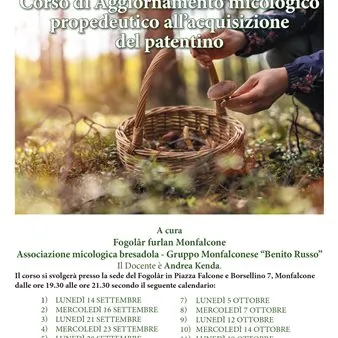

da lun 14 set a mer 21 ott · dalle 19:30
Corso di aggiornamento micologico propedeutico all’acquisizione del patentino
Il Fogolar Furlan a prosecuzione dei corsi tenuti negli anni precedenti in collaborazione con l’Associazione micologica Bresadola - Gruppo Monfalconese “Benito Russo” ripropone anche quest’anno un corso di micologia per i tanti appassionati. L’associazione Fogolâr Furlan…
 Indicazioni
Indicazioni
- Costi e prenotazioni
- Costo non indicato · Prenotazione non indicata
- Programma
- Programma da verificare. Apri la fonte ufficiale per orari e possibili aggiornamenti.
- In caso di maltempo
- Nessuna indicazione specifica pubblicata.
- Note
- Acquisito automaticamente dalla fonte.
L’EVENTO
Descrizione completa
Descrizione Il Fogolar Furlan a prosecuzione dei corsi tenuti negli anni precedenti in collaborazione con l’Associazione micologica Bresadola - Gruppo Monfalconese “Benito Russo” ripropone anche quest’anno un corso di micologia per i tanti appassionati. L’associazione Fogolâr Furlan Monfalcone, l’Associazione micologica Bresadola - Gruppo Monfalconese “Benito Russo” e con il sostegno di Ente Friuli nel Mondo e di Civibank, invitano la cittadinanza a partecipare a questo corso che è gratuito. Il corso è tenuto dal socio del Fogolâr Furlan Monfalcone, micologo, Andrea Kenda nelle giornate di lunedì e mercoledì dalle ore 19.30 alle 21.30 presso la sede del Fogolâr in piazza Falcone e Borsellino n° 7 per un totale di dodici lezioni- sei settimane. Inizio lezioni lunedì 14 settembre. Le lezioni trattano della morfologia dei funghi, dove e come crescono, le caratteristiche morfologiche, la tossicologia, la conoscenza dei funghi eduli che si differenziano dai funghi tossici e saperli distinguere. Il tutto è supportato da diapositive, esame in sala di funghi, fotocopie, quindi non solo teoria, ma anche pratica. Per eventuali informazioni e iscrizioni contattare il socio Arrigo Vivaldi cell. 333 373 5900. Il corso è a partecipazione libera e gratuita fino a esaurimento posti.
Organizzato da: Fogolar Furlan Associazione micologica Bresadola Gruppo Monfalconese “Benito Russo” Civibank
IL PROGRAMMA
Programma e orari
Appuntamenti raccolti dalle fonti elencate. Dove manca un orario, non è ancora disponibile in questa scheda.
Programma pubblicato
- Dal 2026-09-14 al 2026-10-21
INFORMAZIONI UTILI
Prima di partire
- Controllare la fonte prima di partire.
ORGANIZZAZIONE